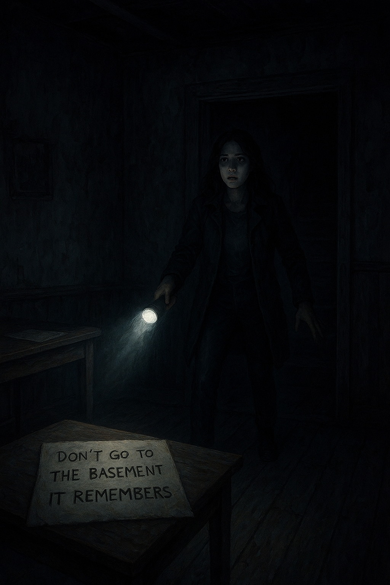

Welcome to a story that won’t let you sleep again.

Every town has its secrets, but some are better left buried. In the small, forgotten village of Hollow Creek, legends whisper of a night when the veil between the living and the dead fades away. Tonight, the legend returns.